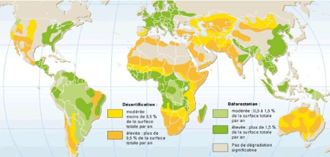
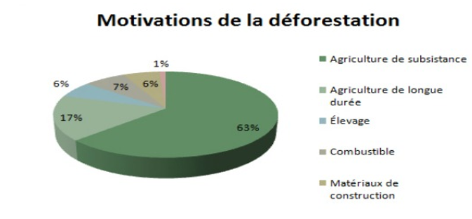

Animaux en voie d’ extinction
Les principales causes
Déforestation :Agriculture, routes, barrages, mines, industrialisation, Trafic d’espèces sauvages: Rhinocéros de Java, Tigre du Bengale, Eléphant d’Asie, Gorille Africain, Panda géant d’Asie, Animal éteint: Le Dodo, Environnement planète :Changement climatique , biodiversité, écosystème, Braconnage, chasse à outrance
- Aujourd’hui nous avons à travers la planète un dérèglement climatique à plusieurs étages causé par l’homme à savoir:
- Le déboisement à marche forcée par la réduction de la surface habitable des animaux qui est de plus en plus criant au 21è siècle , 30% du commerce du bois est illégal
- Le trafic illégal d’espèces sauvages est un marché à plusieurs MDS de dollars chaque année selon certaines ONG.
- Le braconnage dans certaines zones du monde contribuent à réduire considérablement lé déclin d’espèces protégées
- Tigre, éléphant, le koalas, Rhinocéros, le Panda, diable de Tasmanie (TAZ;), le Panda ,Tortue de la Mary river vivant en eau douce riche en oxygène
- D’après l’ONU « 100000 éléphants « ont été braconnés ces trois dernières années et 1200 rhinocéros »
- Un scandale sans nom ! si la Bêtise humaine.
Déforestation
Plus de la moitié de la déforestation mondiale est directement liée à la conversion des forêts en zones de culture ou de pâturage
Les fronts de la déforestation se multiplient et s’étendent, alerte le Fonds mondial pour la nature, le WWF. La Terre, qui était couverte à 50 % de forêts il y a huit mille ans, ne l’est plus qu’à 30 %. Non seulement de nouvelles zones soumises aux incendies et aux défrichements apparaissent en Afrique – au Liberia, au Ghana, à Madagascar – et en Amérique latine – notamment au Mexique et au Guatemala –, mais la destruction des jungles, forêts primaires ou sèches, savanes arborées s’accélère partout sur la planète.
Dans un rapport rendu public mercredi 13 janvier, l’ONG recense et analyse les vingt-quatre principaux fronts dans trente pays. Cinq ans après leur précédente analyse, la situation s’est encore dégradée : à eux seuls, ces vingt-quatre fronts menacent un cinquième des forêts tropicales du monde.
 